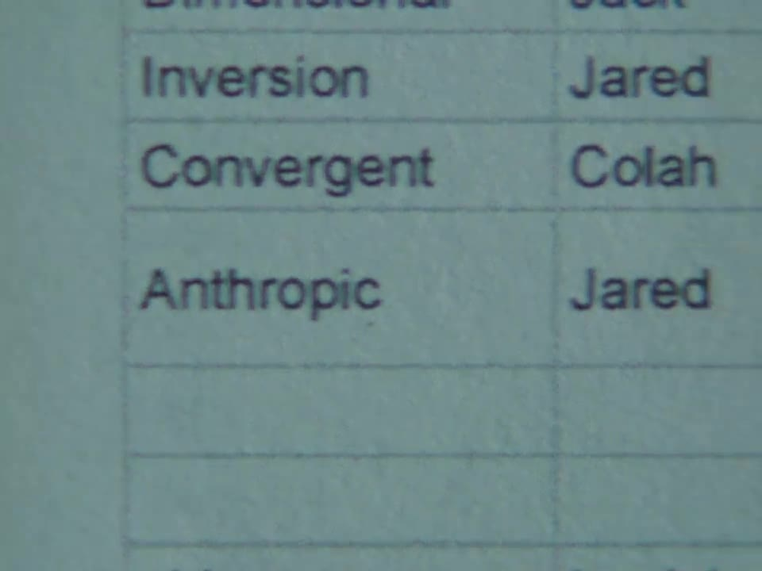
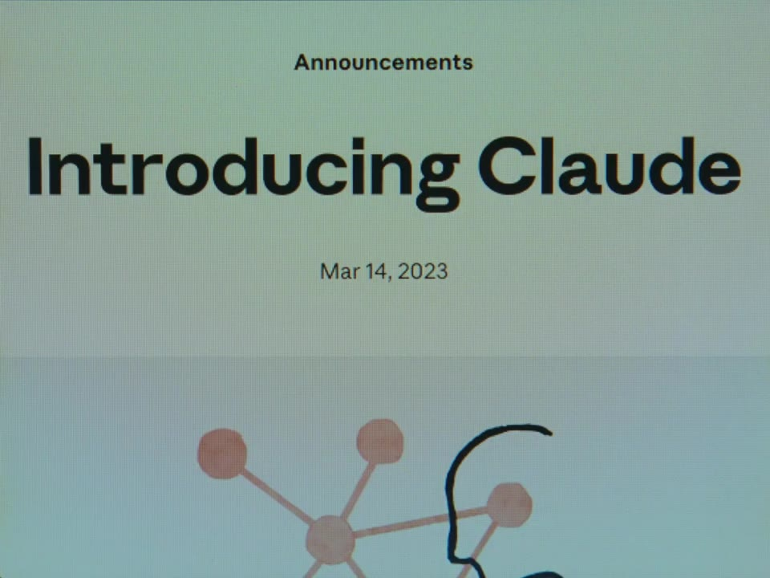

The making of Anthropic
▶ 원본 영상 보기한눈에 보기
- Anthropic 공동창업자들은 AI가 의료·과학 등 인류 난제를 풀 잠재력과 동시에 큰 위험을 지녔다고 보고, 안전에 헌신하는 조직을 만들기 위해 회사를 세웠다.
- 연산량(compute)과 데이터를 늘릴수록 지능이 예측 가능하게 오른다는 "스케일링" 관찰이 창업의 출발점이었다.
- 2021년 1월 공익법인(PBC)으로 설립했고, 2023년 3월 Claude를 공개했지만 초기에는 선두에서 한참 뒤처져 있었다.
- Claude 3 Opus, Sonnet 3.5, Claude Code로 경쟁력을 얻었고, 안전 연구는 최전선에 있어야 잘할 수 있다고 본다.
- 2026년 사이버 취약점 탐색 능력이 매우 뛰어난 Mythos 모델을 Glasswing 프로젝트로 일부 기업에만 먼저 공개했다. 수익 극대화가 아닌 공익 사명을 우선한 사례로 소개된다.
이런 분께 도움이 됩니다
- Anthropic이 왜, 어떤 과정으로 만들어졌고 어떤 원칙으로 움직이는지 궁금한 분.
- AI 위험과 기대를 창업자들의 관점에서 한 번에 보고 싶은 분.
핵심 내용
창업 동기: 기회와 위험
- 창업자들은 물리학·생물학·글로벌 개발·저널리즘 등 다양한 배경에서 AI로 모였고, 세상을 낫게 만들 도구로 AI를 봤다. (0:37)
- 핵심 관찰은 "big blob of compute"다. 더 큰 컴퓨터에 더 많은 데이터를 넣으면 예측 가능한 곡선으로 지능이 오르고, 새 능력이 나타난다. (2:15)
- 이대로면 인간 수준 AI가 100년 뒤가 아니라 우리 생애 안에 온다고 판단했다.
- 기대: 암 발병률 90% 감소, 심장병·비만·주요 감염병 극복 가능성 언급.
- 동시에 자신보다 강력해질 수 있는 것을 만드는 위험도 크다고 봤다. 의약품이나 원자력처럼 가치가 크지만 잘못될 수도 있는 기술에 가깝다는 비유다. (3:15)
💡 가장 원한 것은 안전에 대한 깊은 헌신이 있는 환경에서 함께 일하는 것이었다.
회사 형태와 이름
- 경제적 유인만이 아니라 "세상에 옳은 일을 하려는 유인"으로도 움직이도록 공익법인(PBC)을 택했다. 2021년 1월 26일 설립. (4:59)
- 필요하면 이익이나 주주 가치 극대화를 희생하고 사명을 우선하겠다는 취지다.
- 이름 후보는 Squirrel, Owl, Whale 등이 있었고, Jared가 낸 Anthropic("인간 중심")이 채택됐다. anthropic.com 도메인이 가장 저렴했던 것도 한몫했다. (5:27)
- 초기에는 모두가 잡무를 맡았다. AWS 클러스터 확보, 웹사이트 제작, 투자 유치, 채용, 한동안 Jared의 급여 처리까지. (5:55)

Claude의 탄생과 뒤처졌던 시기
- 초기 목표는 도움이 되고(helpful), 해롭지 않고(harmless), 정직한(honest) 어시스턴트였다. 초기 모델은 정직하지 않아 말을 지어냈다. (예: 감자만 먹는 식단이 건강하다고 설득) (7:35)
- 2022년 중반 코드명 Junior 모델이 실제로 대화가 되는 수준이 되었고 이것이 Claude가 됐다. 한 창업자는 "헬리콥터를 한 끼에 몇 대 먹을 수 있나" 질문에 "함정 질문"이라고 답하는 것으로 똑똑해졌음을 확인했다. (8:34)
- 2023년 3월 Claude를 공개했지만 최전선에서 상당히 뒤처져 있었고, 고객이 "왜 당신 모델이어야 하냐"고 묻는 상황이었다. (9:09)
- 대응: 컴퓨터 확보와 알고리즘 효율("compute multipliers") 개선, 사전학습·RL 개선에 집중.

반등과 최전선에 서는 이유
- Claude 3 Opus로 처음 정말 좋은 모델을 만들었고, 몇 달 뒤 Sonnet 3.5로 프로그래밍에 쓸 만해졌다. 이 과정에서 만든 내부 도구가 Claude Code가 되었고 외부 공개 후 수요가 폭증했다. (10:15)
- 최전선에 있어야 안전 연구를 제대로 할 수 있다는 입장이다. 문제를 가장 먼저 보고 대응 시간을 가장 많이 얻는다. 안전 연구는 경쟁에 불리해도 생태계 전체를 위해 계속 공개해 왔다. (10:47)
💡 이 기술은 그것에 대해 정직할 수 있어야만 잘 풀린다.
Mythos와 Glasswing (2026)
- 새 모델 Mythos는 전문가 수준으로 소프트웨어 취약점과 익스플로잇을 찾아냈다. 악의적 행위자가 쓰면 전 세계가 위험해질 수 있다고 판단했다. (11:58)
- 경영진이 모여 기존과 다른 방식으로 공개하기로 했고, Glasswing 프로젝트로 소수 기업에만 먼저 접근을 주고 그동안 안전장치를 준비했다. (12:35)
- 방어자가 Claude로 취약점을 찾아 패치하게 하는 것이 목적이다.
- 수익 극대화에는 최선이 아닐 수 있지만, 공익 사명이 바로 이런 때를 위한 것이라고 설명한다.
기대와 현재 위치
기억할 숫자·인용
- 설립일: 2021년 1월 26일 (공익법인)
- Claude 공개: 2023년 3월
- 암 발병률 "90% 감소" 가능성 (영상 속 낙관적 전망)
- "We haven't earned the right to talk about how great those things are. But we're starting down the path."
생각해볼 점
- 창업자 본인들의 회고 영상이라 자기 서사를 긍정적으로 구성했을 가능성이 있다. (내 의견)
- "최전선에 있어야 안전하다"는 논리는 경쟁 참여를 정당화하는 면도 있어 외부 검증이 필요하다. (내 의견)
- Mythos의 능력과 위험은 영상 속 주장이며 독립적 확인은 별도로 필요하다.
바로 해볼 일
- Anthropic이 공개한 안전 연구 자료 중 한 편 읽어 보기
- Claude를 업무 하나에 써 보고 어디까지 믿을 수 있는지 기록해 보기